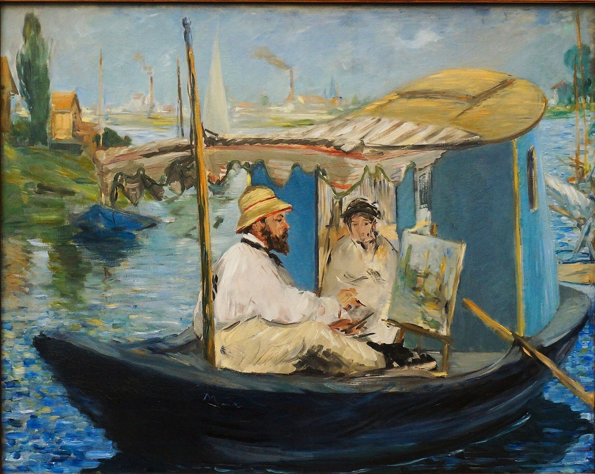
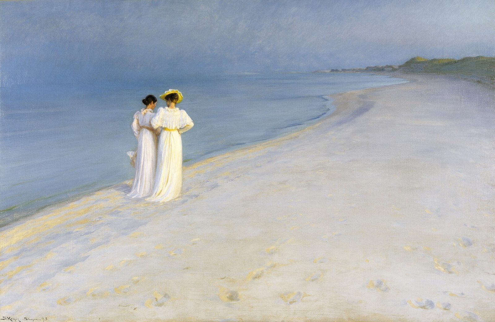
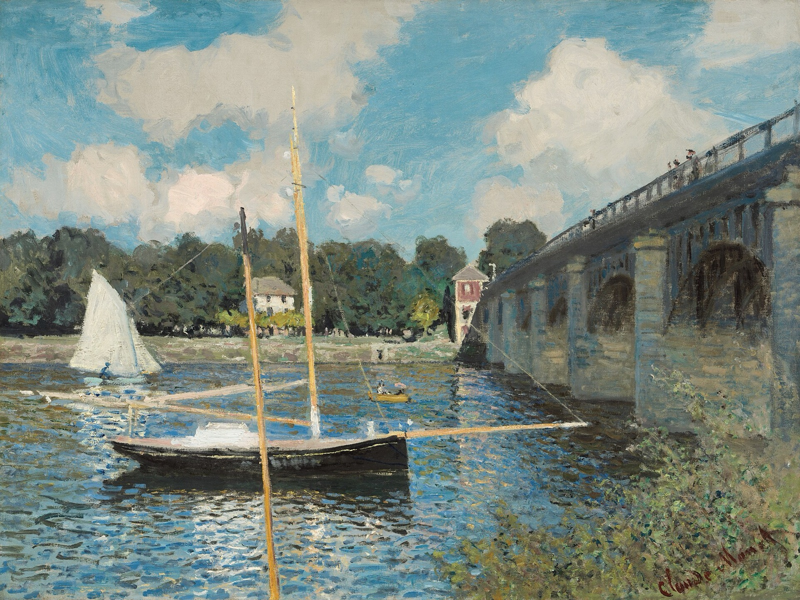
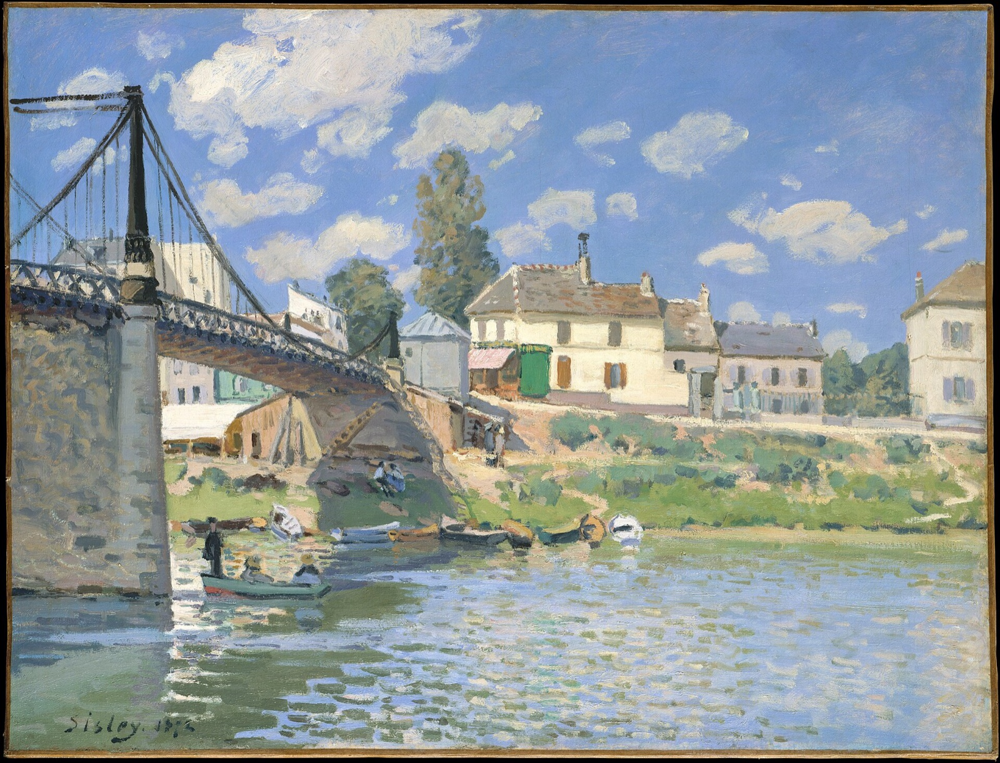
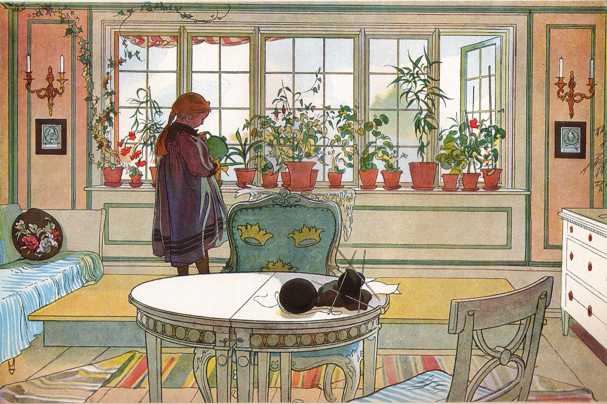
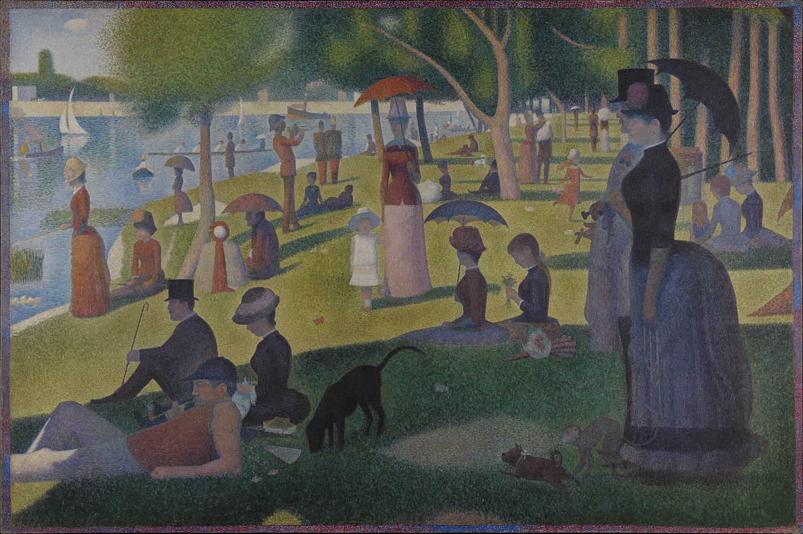

许愿编程从业余到专业，最该修炼的 8 个基本功
最近看身边越来越多非技术同事用 AI 自己搭工具——有人做数据看板，有人写周报聚合，也有人拉出给小团队日常用的内部应用。大家图省事，常把这套做法叫作“许愿编程”。
可跑过几周回头看，同样对着一个模型许愿，做出来的东西质量往往差了一大截。第一天下午大家都能拿出看着挺体面的页面；过半个月，有人的系统稳稳跑在业务里，另一边却已经不敢碰了——改一个小按钮，昨天好好的图表就塌了；加一条新规则，底下的数悄悄算歪了。
很多人会觉得，这是因为自己没学过编程、看不懂语法。其实到今天，敲代码这件事本身已经不再是门槛。真正卡住人的，是几件工程师踩过很多坑后已经变成习惯、平时却很少专门拎出来讲清的事。你不需要转行写代码，把这 8 个点心里有数，让 AI 顺着你的要求去建，结果会完全不一样。

01 留存档，也把草稿桌分开
自己用 AI 改页面时，最让人泄气的瞬间莫过于：刚才明明还好好的，顺口让它把筛选框调一下，整个页面突然白屏。赶紧让它“改回刚才那样”，越改越乱，最后只好把整个文件夹另存一份，桌面上慢慢堆出一排 项目_v2、项目_最终版、项目_别删。
工程师平时几乎不操心这种事，靠的是两个很朴素的习惯。
一个是随时存档，工具叫 Git。你不必去背那些命令行，只要养成一个节奏：每跑通一个小功能、自己点过确认没毛病，就让 AI 顺手打一个存档点（commit），把这次改了什么写清楚。有了这串按时间排好的快照，后面不管怎么大胆试错，改坏了随时一句话退回十分钟前。心里有退路，手脚才放得开。
另一个是把草稿桌分开。假如你正在让 AI 大改核心报表逻辑，半路临时要先修一个错别字并立刻发出去，两件事堆在同一个文件夹里，文件互相盖来盖去，很容易把半成品一起带出去。工程里用分支（Branch）和多工作区（Worktree）来隔离——说白了，就是从主版本里另辟出几张互不干扰的独立工作台。你甚至可以让两个 AI 会话同时在两张工作台上各试一套方案，做完摆在一起比一比，挑顺眼的那份合回主线，另一张桌子直接清掉。

02 动手之前，先认清手里是哪份数据
代码改坏了还能退回上一个存档，真实业务数据写坏了，很多时候就真的找不回来了。
我见过好几次类似的惊险场面。有人随口让 AI“把刚才测出来的几条脏数据清掉”，或者“重跑一遍清洗脚本”，AI 手脚极快，几秒钟跑完——回头一看，它连着的是线上真表，把过去半年的客户记录一块抹了；还有人测邮件发送忘了切名单，测试草稿直接飞进了真实客户邮箱。反过来的乌龙也常见：对着电脑里一份三天前的本地拷贝调了半天公式，纳闷为什么线上看板的数字纹丝不动。
所以每次让 AI 动数据之前，先把三件事看清：眼前连着的是线上正在用的生产主版本，还是拷出来随便折腾的本地副本？接下来要跑的操作是只读查看，还是会修改、覆盖甚至删除原记录？万一跑岔了，有没有原封不动的备份能顶上？
平时调试、试脚本、改口径，一律只给 AI 脱敏或抽样后的本地副本。也可以直接让 AI 在测试页面顶部挂一行醒目的“本地副本”提示，再定死一条规矩：凡是往生产主版本里写数据、删记录或对外发送，程序必须先把要影响多少条、具体动哪几条列出来，等本人确认后再执行。

03 有版本意识，并且明着告诉模型
很多人给 AI 提需求时，只说“要做什么”，很少说“现在做到哪一步了”。
其实模型对“阶段”这个信号非常敏感。你不说，它只能自己猜。猜重了，你本来只想午饭前凑个页面跟同事对齐想法，它给你折腾出登录鉴权、缓存和一堆配置，半天连界面都没见着；猜轻了，你打算明天发给全团队一百人用，它顺手写了个图省事的临时脚本，密钥明文写在代码里，两个人同时点一下就报错。
一个东西从念头长到正式能用，通常要过四个阶段，每个阶段盯着的事完全不一样：
- Demo：只为把模糊的想法变成能看见、能点两下的画面，确认大家想的是不是一回事。这个阶段用假数据、走捷径完全合理，越快出长相越好，别在底层架构上耗时间。
- Alpha：把假数据换成真实数据，拿自己的真实工作流把最核心的一条路跑通。界面糙一点、只跑在自己电脑上、偶尔报错手动重来，都无所谓。
- Beta：拉一小批同事或种子用户试用。自己写的东西自己知道哪里不能乱点，别人不知道——他们会传格式错乱的表格、中途关页面、一次塞进十倍的数据。这一阶段的重心是顺着真实反馈把最硌脚的边界补平。
- Release：正式对外或给全团队日常用，能跑通只是底线，这时候会一下子冒出四个此前几乎没碰过的新问题：
- 安全：谁能看什么数据，密钥和密码有没有不小心写进代码或公开仓库，会不会越权串看。
- 稳定性：多人同时用会不会卡死，依赖的外部接口超时或挂了，页面能不能妥善提示而不是直接白屏。
- 成本：调用模型或云服务的费用有没有硬封顶，万一某段逻辑陷入死循环，会不会悄悄烧穿预算。
- 运维：出了错有没有日志可查，数据怎么定时备份，新版本有毛病怎么迅速回滚。
每次开新任务，顺手用一句话把阶段挑明——告诉它“现在是 Demo 阶段，假数据十分钟出样子，别过度设计”，或者“准备进 Release 给全团队用，按上线标准查一遍安全、稳定、成本上限和出错兜底”。模型一旦知道所处阶段，给出的策略立刻会贴合得多。

04 舍得烧 Token，主动梳理而不是等出事再问
用 AI 做项目久了，会发现大家在 Token 账单上的心态差别很大。不少人习惯省着用，平时轻易不唤它，只有页面冒红字、数字明显算错了，才临时丢一句“这里报错了，帮我修一下”。这种按次救火的做法表面上省了钱，实际上代价最高：你按住了眼前漏水的那一处，暗处还有五六处隐患正攒着，往往专挑最关键的汇报前一起爆出来。
换个角度算这笔账：哪怕你一个月烧掉的 Token 费用达到自己工资的两倍，换来一个 7×24 小时不疲倦、不嫌烦、随时能把整个项目从头到尾细读几十遍的搭档，这笔投入比任何人力都便宜。
关键是把这些算力从“出事再问”，转向定期、成体系地全面梳理。别等 Bug 撞到脸上，隔三差五——甚至趁下班后——让模型沿着三条清晰的脉络，一轮一轮循环（Loop）把整个项目扫透：
- 数据流：一份数据从填进表单或读入源表开始，经过清洗、计算、汇总、存储，直到画在屏幕上，中间有没有哪一步悄悄丢了字段、混了单位，或者把空值错算成了零。
- 控制流：点下按钮之后，程序按什么顺序往下走；如果中途断网、接口超时，或者用户心急连点两下提交，会不会拐进没想过的岔路口。
- 状态流转：凡是有生命周期的业务对象——比如一张审批单从草稿、待审、通过到撤回，或一笔订单从待支付到退款——把所有状态切换列成表逐格核对：会不会出现“已取消的单子还能再点一次退款”，或者单据卡在半路永远关不掉。
让它扫出隐患、修掉、再按这三条线复查一轮，做成持续循环。很多原本要等一个月后才会在真实用户面前露馅的毛病，在昨晚的几轮巡查里就已经安静清掉了。

05 搭自动验证，也给模型找一根“上帝之鞭”
非技术同事验收 AI 写完的东西，最常见的是自己随便填两组数、点两下按钮，看着没报错就收工了。严谨一点的，会在同一个对话框里追问一句“你检查一下有没有问题”，模型往往客客气气地答复“经检查逻辑完整，没有问题”。
让写代码的人自己批改自己的卷子，几乎永远是满分。更麻烦的是回归：这周加了一个很小的筛选条件，新按钮挺顺手，你却不知道它顺手把两周前算折扣的逻辑改偏了。靠人每次把所有旧功能重头点一遍，根本不现实。
想把质量真正稳住，需要三样东西配合起来。
第一样是自动化验证体系，把验货交给机器自动跑：
- 把核心计算公式和业务规则拆成独立小块，每次改完代码自动拿几十组正常和刁钻的例子过一遍——工程里叫单元测试（UT），专门防“修新坏旧”。
- 把表单、数据库和外部接口串起来，模拟真实操作从头跑到尾——叫集成测试，防止零件单看都对，拼在一起却接不上口。
- 如果系统里有几条绝不能算错的硬底线——比如财务分账总和必须严丝合缝、不同部门的权限绝不能串读、审批流绝不能卡死——单靠挑几个例子抽查其实兜不住，现在已经可以让 AI 借助严谨的数学校验工具把所有可能组合彻底验一遍，也就是形式化验证（关于这件事的具体做法，之前在 #07 用数学给概率兜底 里详细聊过）。
第二样是引入“上帝之鞭”。同一个模型在同一段长对话里待久了，很容易顺着自己的思路往下滑，对盲区视而不见。最管用的做法是故意制造对抗：让模型 A 写实现，再另开一个干净会话，或者干脆换一家不同厂商的模型 B，只给它一个任务——把这份方案和代码当成对手的作品来挑刺，专找边界漏洞、算错的可能和被忽略的极端情况。把挑出来的硬伤打回给模型 A 去修，几轮对抗下来，系统的结实程度会上一个台阶。
第三样是立住基线。别凭“感觉这次好像顺手了点”来做判断。攒一套代表真实业务的测试样本——比如过去最难缠的 20 份真实表单，再定几项硬指标：算对的比例、响应速度，或者上线后实际省下的工时。这就是质量基线与产品指标基线。以后每次大改，先对着基线跑一遍：指标涨了才放行，跌了就拦下。
06 承认系统会变旧，和 AI 一起搭套 Ops
很多人下意识把做好的软件当成买回来的一张实木桌，摆好之后只要没人砸它，就能稳稳用上十年。
真实世界里的系统更像一排摆在窗台上的花，哪怕一行代码没动，放着不管三个月也会悄悄出毛病。背后往往是三件躲不开的事：
- 系统会腐烂：依赖的外部工具升级了、上游接口悄悄改了返回格式、应急打上去的临时补丁越叠越厚，昨天还顺溜的流程慢慢开始变慢、报错。
- 数据会漂移：业务一直在动。以前订单都在百元级，这个季度突然来了批大额企业单；上游表格里“华东区”被人随手改成了“东区”；用户在备注里贴进带表情符号的长文本——程序一行错没报，汇总结果却已经偏离了事实。
- 假设会失效：当初搭系统时默认过很多前提，比如“每天最多一百条数据”“节假日没交易”“某渠道转化率在 5% 左右”。半年后业务翻了几倍，旧前提早不成立了，系统还死守着旧规矩。
工程团队专门盯着这些变化、让系统长期保持可控的工作叫 Ops（运维）。非技术同事不需要去盯满屏黑框监控，直接和 AI 一起打磨一套轻巧的巡检节奏就行：
一方面是按周期巡检，让 AI 每天或每周固定拉一遍运行日志、核心数据分布、异常报错和费用账单，整理成一份三分钟能看完的简报推给你——比如“本周整体平稳，但新增了 4 条缺少地区字段的记录，某接口平均耗时比上周慢了一倍”。另一方面是按需排查，大促前、业务刚改规则，或者你直觉今天看板上的数字有点怪时，随时喊 AI 做一次全量体检，把隐患和建议动作列出来。只要这套汇报一直在转，系统就始终在你眼皮底下。

07 Think Big，Build from Small
AI 有个特点：你敢提多大，它就敢一口气写多大。
丢给它一句“帮我做一个带客户分层、自动邮件跟进、权限管理和老板大屏的客户管理系统”，它不会劝你缓一缓，十分钟就能吐出四十个文件、八千行代码。第一眼确实唬人，可真用起来很快就会卡壳——想调一下客户分层的口径，改完邮件模板报错了；修完邮件，权限又乱了。代码全缠在一起，不光你看不懂，连新开一个窗口的 AI 自己也拆不动。
稳住节奏的办法只有一句：Think Big，Build from Small（之前在 #01 Think Big 与 Build from Small 里也专门写过这件事）。
想的时候，格局完全可以放得很大，不必把自己局限在“写个小脚本”，尽管去勾勒理想中整套工作流跑顺了是什么样子。可落手去做时，一定要拆成一块块职责单一、边界干净的小块。先只做“读入原始表格并校验字段齐全”这一块，输入输出清清楚楚，单独测稳、存好档；确认扎实了，再接第二块“按业务规则打标签”；再接第三块“生成汇总视图”。
每一小步都看得清、验得明，哪怕哪一块做歪了，因为边界干净，扔掉重做只要五分钟。一旦一开始就让 AI 摊出一张互相粘连的大饼，长歪了就只能整份重来。

08 AI 能替你写代码，替不了你想清楚要做什么
过去写代码贵、排期长，反倒逼着大家在动工前把需求反复掰扯清楚。现在写代码几乎免费，一个新问题冒了出来：含糊的念头会被极快地做成精致而复杂的废品。
随口丢一句“帮我做个更好用的周报分析工具”，AI 三分钟就能端出一个配色讲究、图表齐全的网页。看着像推进了一大步，真用两天就觉得处处别扭：这页到底给谁看？看完希望他做什么决定？屏幕上这五个指标为什么凑在一起？某个数变红之后，现实里下一步该干什么？
这些事模型替你做不了主。凡是你含糊带过的地方，AI 不会停下来等你，它会按“大概率看着像那么回事”替你猜一套规则，然后硬生生写进代码里。比如部分退款后积分怎么扣、同一天重复提交算覆盖还是算两条、大客户和小客户的预警线是不是一样——这些决定系统灵魂的业务规则，只有真正懂业务的人能拍板。
所以动工写第一行代码前，最值的十来分钟其实是先停下来，让 AI 反过来采访你：让它站在苛刻业务搭档的角度，追问八到十个你还没说清的问题——给谁用、解决什么真问题、正常怎么算、例外怎么判、什么明确不做——等你答完，让它整理成一页大白话说明，对齐了再开工。人把业务和目标想透了，模型写出来的东西才真正立得住。
尾声
把这 8 个点摊开来看，没有哪一条要求你去背代码语法。存档和分桌让你敢试错，分清数据和版本阶段让你不踩大坑，舍得用算力主动扫雷、建好自动验证与异源对抗、加上线后的日常巡检，能让系统长久稳得住；而拆小步推进、亲手想透业务和目标，则把最核心的掌控权留在自己手里。
向 AI 许个愿只要十秒钟。让这个愿望真正落进日常业务里、经得起时间和真实用户的考验，靠的大概就是这 8 件朴素的小事。